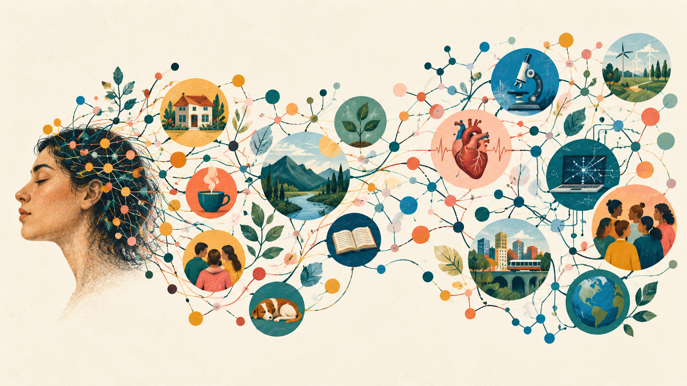

Resultados del proyecto SWOW
COMUNICACIÓN DE RESULTADOS
Resultados del proyecto Small World of Words
Si alguien lee “mate”, puede responder yerba, termo o amargo. Juntamos miles de respuestas de ese tipo para estudiar cómo se relacionan las palabras en el español rioplatense.

13.000+
palabras estudiadas
3,6 millones
de respuestas
64.598
participantes válidos
Qué hacemos con las asociaciones
En SWOW cada participante ve una palabra y escribe las tres primeras que le vienen a la mente. Con esas respuestas construimos una red: cada palabra es un punto y cada asociación es una conexión. Si una respuesta se repite mucho, la conexión tiene más peso.
La red no funciona como un diccionario. Describe relaciones entre palabras tal como aparecen en las respuestas de un grupo de personas. Sirve para estudiar cómo organizamos los significados y cómo esas relaciones cambian con el tiempo.
Resultados publicados
2023
Normas de asociación para el español rioplatense
Cabana et al. (2023) · The “Small World of Words” free association norms for Rioplatense Spanish
Construimos la base de asociaciones más extensa disponible para el español: más de 13.000 palabras y 3,6 millones de respuestas, recogidas principalmente en Uruguay y Argentina. Las asociaciones dependen de la variedad del idioma y del contexto cultural, por lo que no siempre alcanza con traducir datos obtenidos en otros lugares.
Las medidas calculadas a partir de la red ayudan a predecir qué tan rápido reconocemos una palabra. La red también reproduce los juicios humanos de similitud mejor que varios modelos entrenados solamente con textos.
Los datos recogidos entre hablantes de español rioplatense aportan información que no aparece en normas de otras lenguas o variedades.
2023
Cambios semánticos durante la pandemia
Laurino et al. (2023) · The Pandemic in Words: Tracking Fast Semantic Changes via a Large-Scale Word Association Task
Comparamos respuestas recogidas antes y durante la pandemia de COVID-19. Las palabras relacionadas con la pandemia incorporaron más asociaciones nuevas y cambiaron sus conexiones. Virtual, por ejemplo, apareció menos asociada con imaginario o irreal y más con escuela, trabajo y Zoom.
También cambió el peso relativo de algunos sentidos: inmunidad quedó más asociada con la salud y ensayo con la investigación científica. Esos cambios aparecieron en un período corto y fueron consistentes con las transformaciones de la vida cotidiana.
En este caso, las asociaciones permitieron detectar cambios en el uso y el significado de las palabras en un período relativamente corto.
2026
Una medida automática de la ambigüedad
Iglesias et al. (2026) · Automatic quantification of lexical ambiguity using large-scale word association data
Las respuestas a una palabra ambigua tienden a formar grupos dentro de la red. Un algoritmo puede detectar esos grupos —o comunidades— y estimar cuántos sentidos aparecen, cuán diferentes son y cuál es el más frecuente.
El método permite analizar muchas palabras sin pedirle a cada participante que enumere definiciones. Sus medidas también ayudan a explicar la velocidad y la precisión con que reconocemos palabras, incluso cuando se consideran otras medidas de ambigüedad.
La estructura de las asociaciones contiene información sobre los distintos sentidos de una palabra y sobre la frecuencia relativa de esos sentidos.
cuenta · préstamo
plaza · madera
mar · cardumen
Algunas aplicaciones
Procesamiento de palabras
Las redes permiten estudiar cómo almacenamos, relacionamos y recuperamos significados, y contrastar esas medidas con el comportamiento en tareas experimentales.
Cambio lingüístico
La comparación de datos recogidos en distintos momentos permite examinar cómo una crisis, una tecnología o un cambio social modifica el uso de ciertas palabras.
Recursos para el español rioplatense
Los datos pueden usarse en investigación, educación y tecnologías del lenguaje que necesiten representar esta variedad del español.
Participá en SWOW
La colecta sigue abierta. Participar lleva pocos minutos y ayuda a ampliar los datos disponibles sobre el español rioplatense.
Fuentes
- Cabana, A. et al. (2023). The “Small World of Words” free association norms for Rioplatense Spanish. Behavior Research Methods.
- Laurino, J. et al. (2023). The Pandemic in Words: Tracking Fast Semantic Changes via a Large-Scale Word Association Task. Open Mind.
- Iglesias, I. et al. (2026). Automatic quantification of lexical ambiguity using large-scale word association data. Behavior Research Methods.
Las cifras y conclusiones de esta página resumen esas publicaciones. Los ejemplos traducen los resultados a un lenguaje de divulgación; no sustituyen la lectura de los artículos.